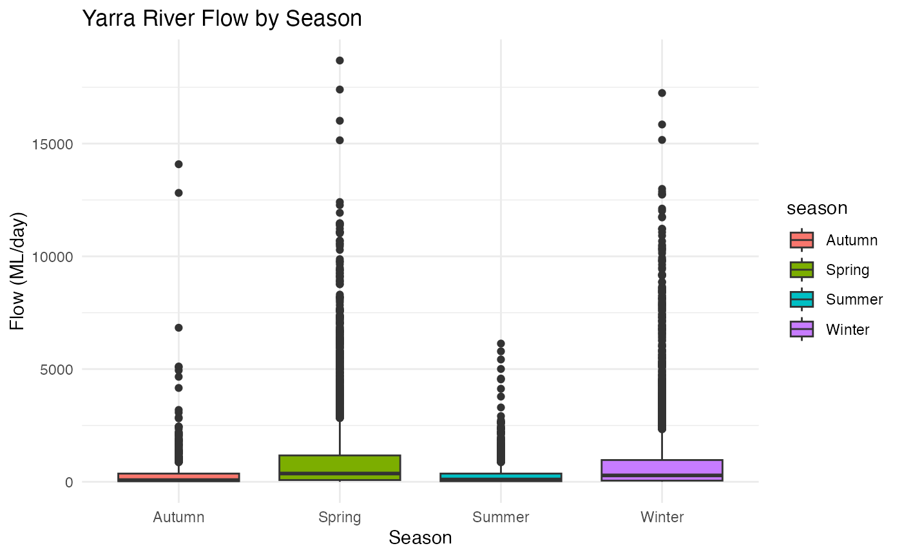

yarra_water_analysis.RmdThe YarraWaterAnalysis package provides tools for
analyzing and visualizing streamflow data from the Yarra River at
McMahons monitoring site.
Load the YarraWaterAnalysis package using the library() function.
library(YarraWaterAnalysis)The package includes daily mean streamflow data with the following key variables:
| Variable | Type | Description |
|---|---|---|
| site_id | double | Site Id |
| site_name | character | Site Name |
| datetime | double | Datetime yyyy-mm-dd hh:mm:ss |
| data_type | character | Data type |
| parameter_id | double | Parameter id |
| parameter | character | Parameter |
| value | double | Daily mean streamflow in ML/day |
| unit | character | Unit |
| quality | double | Quality |
| resolution | character | Resolution |
| date | double | Date of measurement |
| year | double | Year |
| month | integer | Month |
| day | integer | Day |
| season | character | Seasonal classification |
| flow_category | character | Flow magnitude category |
| log_flow | double | Log Flow |
| flow_7day_avg | double | Flow 7day avg |
calculate_flow_stats(yarra_water_data)You can use this function to calculate basic statistics for Yarra River streamflow data
# Analyze seasonal patterns
seasonal_stats <- analyze_seasonal_patterns(yarra_water_data)
print(seasonal_stats)
#> # A tibble: 4 × 6
#> season avg_flow median_flow max_flow min_flow n_observations
#> <chr> <dbl> <dbl> <dbl> <dbl> <int>
#> 1 Autumn 248. 75 14085 0 3347
#> 2 Summer 272. 102 6131 0 3535
#> 3 Winter 922. 283 17245 0 3407
#> 4 Spring 1023. 366 18687 0 3823
# Plot seasonal distribution
ggplot(yarra_water_data, aes(x = season, y = value, fill = season)) +
geom_boxplot() +
labs(title = "Yarra River Flow by Season",
x = "Season", y = "Flow (ML/day)") +
theme_minimal()
You can use this function to analyze seasonal patterns
#> # A tibble: 6 × 18
#> site_id site_name datetime data_type parameter_id parameter value
#> <dbl> <chr> <dttm> <chr> <dbl> <chr> <dbl>
#> 1 229143 YARRA @ CH… 1975-10-26 23:59:59 Quantity 142. Streamfl… 18687
#> 2 229142 YARRA @ TE… 1975-10-26 23:59:59 Quantity 142. Streamfl… 17399
#> 3 229143 YARRA @ CH… 1977-07-01 23:59:59 Quantity 142. Streamfl… 17245
#> 4 229143 YARRA @ CH… 1975-10-27 23:59:59 Quantity 142. Streamfl… 16014
#> 5 229143 YARRA @ CH… 1977-06-20 23:59:59 Quantity 142. Streamfl… 15849
#> 6 229143 YARRA @ CH… 1977-06-19 23:59:59 Quantity 142. Streamfl… 15164
#> # ℹ 11 more variables: unit <chr>, quality <dbl>, resolution <chr>,
#> # date <date>, year <dbl>, month <ord>, day <int>, season <chr>,
#> # flow_category <chr>, log_flow <dbl>, flow_7day_avg <dbl>You can use this function to detect high flow event